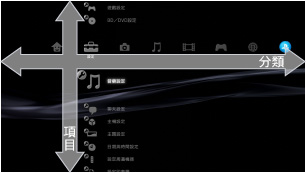
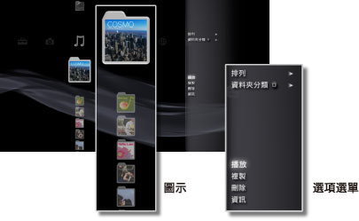
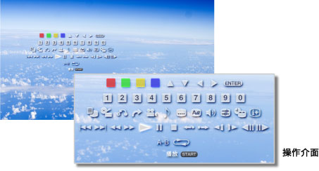

XMB™之基本操作 > XMB™（交叉媒體廊）之基本操作
XMB™（交叉媒體廊）之基本操作
如何使用XMB™
PS3™內建了一套名為「XMB™（交叉媒體廊）」的使用者介面。橫列會分類顯示PS3™之機能，直列則會顯示各類別中可執行的項目。

| 方向按鈕 | 選擇類別／項目。 |
|---|---|
 按鈕 按鈕 |
決定選擇該項目。 |
 按鈕 按鈕 |
取消操作。 |
 按鈕 按鈕 |
顯示選項選單／操作介面。 |
| PS按鈕 | 顯示XMB™。 |
如何播放內容
進入XMB™，選擇想播放的光碟或儲存媒體內的內容後，按下按鈕。按下按鈕可中止播放。
提示
部分PS3™機種需於使用儲存媒體時，搭配非隨附的USB讀卡機等。
資訊介面
可從XMB™畫面右上方的資訊介面，確認已連線的好友人數、簡訊接收情況、What's New的最新情報等。

(1) |
個人造型* |
|---|---|
(2) |
已連線的好友人數* |
(3) |
新的文字聊天* |
(4) |
簡訊接收情況 |
(5) |
日期與時間 |
(6) |
忙碌圖示 |
(7) |
What's New的情報 |
* 需先登入PSNSM方可顯示。
如何使用選項選單
進入XMB™，選擇圖示並按下按鈕後，即會顯示選項選單。再度按下按鈕，可調整顯示／隱藏。

選項項目的一例
選擇選項選單時可執行的機能會因類別或項目而異。
| 播放／啟動／顯示 | 播放內容。 |
|---|---|
| 取出光碟 | 取出光碟。 |
| 刪除 | 刪除內容。 |
| 複製 | 將內容寫入主機儲存空間或儲存媒體中。*1 |
| 資訊 | 顯示內容的相關資訊。亦可編輯標題名稱等內容。 |
| 追加至播放目錄 | 將內容追加至播放目錄。 |
| 全部顯示 | 顯示所有保存於儲存媒體或USB大容量儲存裝置的資料夾。*1 |
| 排列 | 依名稱順序或日期順序等排列。 |
| 資料夾分類 | 變更分類方式，更改為依專輯排列或依格式排列等。 |
| 選取刪除 | 選擇要刪除的項目或一次刪除多種項目。 |
| 選取複製 | 選擇要複製的項目或一次複製多種項目。 |
| *1 |
部分PS3™機種需於使用儲存媒體時，搭配非隨附的USB讀卡機等。 |
|---|---|
| *2 |
分類必要資訊不齊全的內容，會被自動分類至［未設定］資料夾。此外，部分內容可能無法分類。 |
如何使用操作介面
於播放內容時若按下按鈕，會顯示操作介面。再度按下按鈕，可調整顯示／隱藏。操作介面之顯示項目會因播放之內容而異。

同時使用多種的機能
PS3™能夠同時提供多種的機能。您可在進入 （音樂）播放音樂時選擇
（音樂）播放音樂時選擇 （相片）欣賞圖像，或是選擇
（相片）欣賞圖像，或是選擇 （網路）瀏覽網際網路。
（網路）瀏覽網際網路。
例）進入（音樂）播放音樂時，選擇（相片）欣賞圖像
1. |
選擇 |
|---|---|
2. |
按下PS按鈕。 |
3. |
進入 |
提示
- 播放Super Audio CD或將
 （設定）＞
（設定）＞ （音樂設定）＞［輸出周波數］調整為［44.1 / 88.2 / 176.4 kHz］時，無法於播放（音樂）內容時同時使用其他機能。
（音樂設定）＞［輸出周波數］調整為［44.1 / 88.2 / 176.4 kHz］時，無法於播放（音樂）內容時同時使用其他機能。 - 隨播放內容種類之不同，可能無法同時使用多種機能。
重要
Super Audio CD無法於部分PS3™上播放。詳細請參閱［關於可播放的光碟種類］。